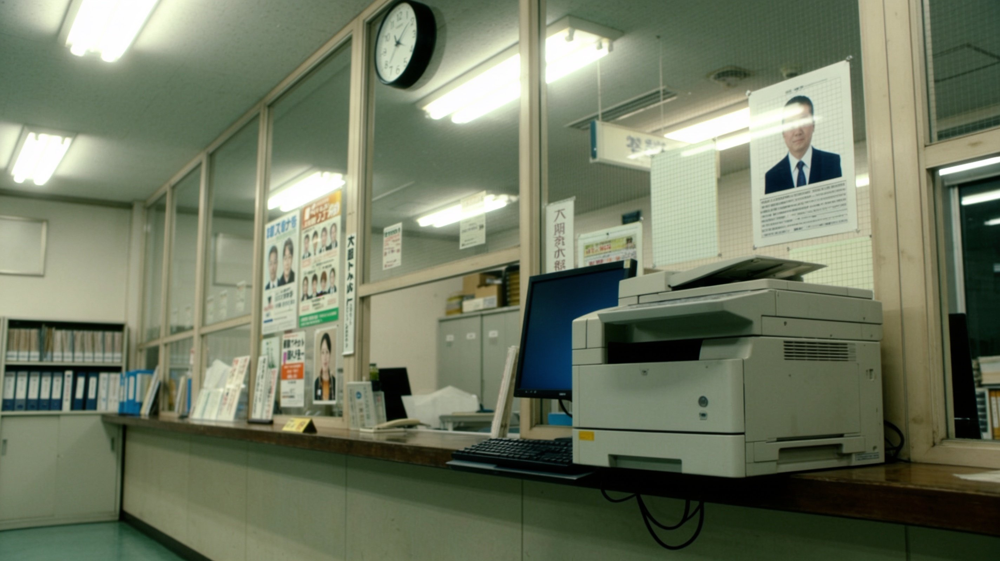
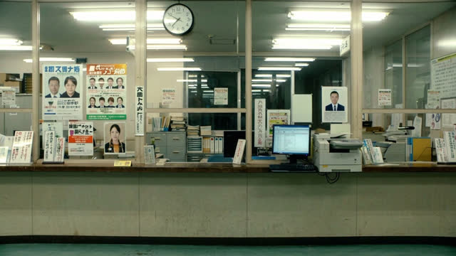
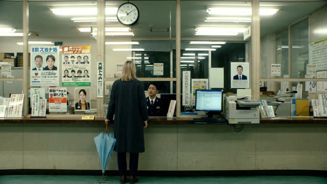

SHOT 01 · nw_s5 · nw_b103 (11.88s -> 7.42s + 4.46s)
Fax machine and fast clock
“An old fax machine beside a new flat monitor. A wall clock that runs a minute fast.”

Selected option 2 (2848×1600) · Saved to directory only · Open full-size image ↗
Surrounding frames


Prompt & references
Create ONE horizontal widescreen 16:9 photorealistic cinematic film still for the Tokyo noir drama Nobody's Witness at beat nw_b103, bridging the two supplied Kanda police-station counter references. Compose a closer angled medium-detail shot along the wooden counter and glass partition before anyone steps up to it: foreground the bulky beige old office fax-copier machine sitting right beside the blue-lit black flat LCD monitor and keyboard on the counter, with the round black-rimmed white wall clock mounted high on the partition frame above under cool greenish-white fluorescent ceiling tubes. Match the exact office cabinets, binder shelves and muted institutional palette of the references without adding people yet. Grounded 35mm film photography, true 16:9 landscape framing. No captions, subtitles, invented English overlays or watermarks.
- Preceding shared still:
/film/img/s5/43-the-front-counter.jpg - Following still:
/film/img/s5/44-dripping-umbrella.jpg